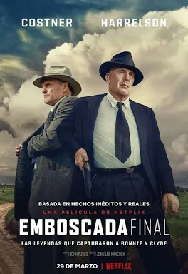
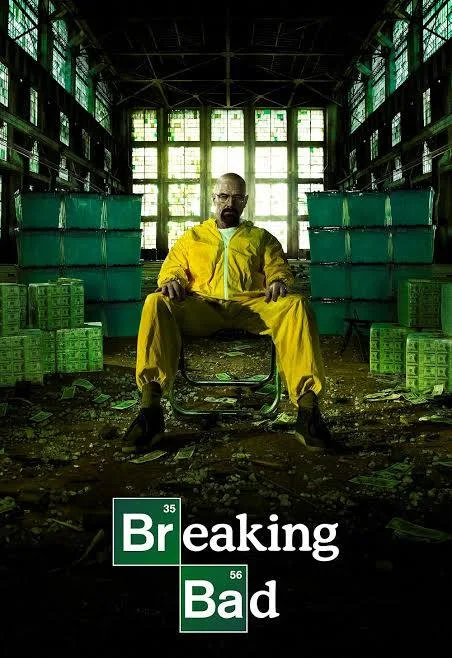

PEAKY BLINDERS: EL HOMBRE INMORTAL
Durante la Segunda Guerra Mundial, Tommy Shelby regresa a Birmingham devastada por los bombardeos, enfrentando misiones secretas y los fantasmas de su pasado. La película funciona como epílogo de la serie, cerrando la historia del personaje con un tono épico y bélico.
- Género: Drama histórico, crimen
- Año: 2026
- Duración: 1h 52min
- Director: Tom Harper
- Productores/as: Steven Knight, Caryn Mandabach, Guy Heeley, Jamie Glazebrook, David Kosse, Cillian Murphy
- Calificación general: 6.5/10
- Clasificación por edad: +16
- Plataformas: Netflix
Tráiler
REPARTO
CILLIAN MURPHY
REBECCA FERGUSON
TIM ROTH
SOPHIE RUNDLE
BARRY KEOGHAN
RESEÑAS DESTACADAS
Calificación: 8.0 / 10

FanDeShelby dice:
Un cierre digno.
"Cillian Murphy vuelve a brillar como Tommy Shelby. La ambientación bélica es impresionante y el tono épico le da un gran final a la saga."
Calificación: 7.0 / 10
CriticoTV dice:
Entretenida, pero irregular.
"La película es buena, aunque algunos pasajes se sienten apresurados. No alcanza la fuerza narrativa de la serie, pero cumple como epílogo."
Calificación: 9.0 / 10
DramaLover dice:
Emocionante y nostálgica.
"El regreso de Tommy Shelby es un viaje lleno de emociones. La mezcla de acción y drama histórico logra mantener la esencia de la serie y darle un cierre memorable."
Calificación: 7.5 / 10
CineGeek dice:
Gran ambientación, pero ritmo irregular.
"La atmósfera de guerra está muy bien lograda, transmitiendo tensión y realismo. Sin embargo, el ritmo narrativo decae en algunos momentos. El final compensa con un clímax emocionante."
Calificación: 6.5 / 10
FilmFan dice:
Un epílogo que pudo ser mejor.
"Aunque es agradable ver de nuevo a los Shelby, la trama principal se siente algo floja y repetitiva. El carisma de Cillian Murphy sostiene la película, pero esperaba un guion más sólido."
RELACIONADOS
PEAKY BLINDERS (SERIE)
Calificación: 8.8/10
DURACION: 6 temporadas

HOUSE OF THE DRAGON
Calificación: 8.5/10
DURACION: 2 temporadas

EMBOSCADA FINAL
Calificación: 7.8/10
DURACION: 2h 12min
LOS CABALLEROS
Calificación: 7.5/10
DURACION: 1h 53min
